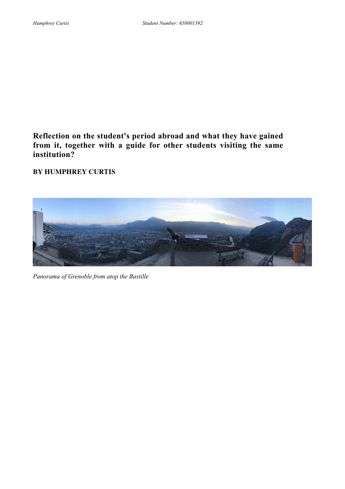

A Year at Sciences Po Grenoble

This paper reflects on a year studying political science at Sciences Po Grenoble. Written after returning to Exeter, it pairs a candid account of cultural adjustment and personal growth with a practical guide for students preparing to study at the same institution.
Learning abroad
The reflection traces the move from early homesickness and unfamiliar French bureaucracy towards greater independence, confidence and intercultural awareness. Studying within a grande école also offered a direct comparison with British university life and a sustained opportunity to improve spoken French.
A guide for future students
The second half turns experience into practical advice: preparation, friendships, accommodation, finances, travel, societies, skiing and administrative life in Grenoble. The result is both a record of the year and a guide intended to make the transition easier for the students who followed.